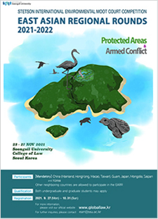
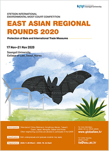
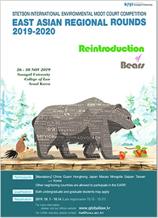
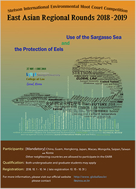
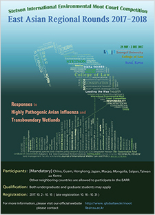
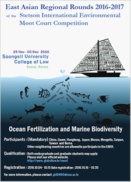
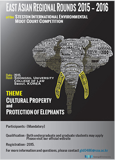
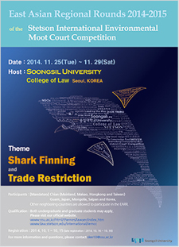
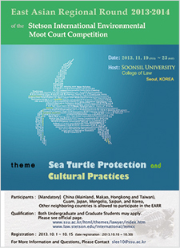
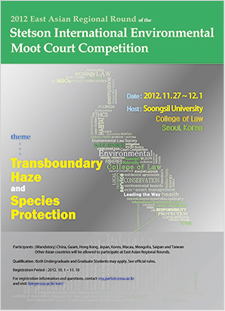

About EARR
-
2021-2022 주제: 보호구역과 무력 분쟁
 2021년 제10회 스텟슨 국제환경모의재판 동아시아 경연대회에서는 “보호 습지에서의 무력갈등”에 관련한 법적 분쟁을 다룹니다.
카리브해의 카레타 섬에 위치한 안후르 연방과 롱고 공화국은 인접 주권 국가입니다. 카레타는 1500년대 초부터 1898년까지 식민 통치의 대상이었으며 이때 안후르와 롱고로 나눠졌습니다. 카레타의 남쪽에 위치한 작은 섬 켐프 키는 롱고의 문화와 언어를 사용함에도 불구하고 이때 안후르로 배속되었습니다. 1985년 카레타 국가 연합의 해산 이후 안후르와 롱고는 조약을 통해 국경선을 유지하였습니다. 1986년 람사르 협약에 가입하면서 롱고는 자국의 멘히트 복합 습지를 국제 보호 습지 (람사르 사이트)와 국립공원으로 지정하였습니다. 멘히트 복합 습지는 안후르와 접경한 카레타 북부에 위치해 있습니다. 1897년 안후르 또한 람사르 협약에 가입하면서 켐프 키에 위치한 스쿠트 연안 습지를 람사르 사이트로 지정하였습니다.
스쿠트 연안 습지는 멸종 위기에 처한 바다거북 로열 리들리의 보금자리입니다. 2019년 안후르의 국회의원 선거 이후 ANP-FF라는 무장단체가 국경을 넘어 롱고의 멘히트 습지에 캠프를 설치하였습니다. 2019년 11월 ANP-FF는 안후르 영토를 공격하였고 이에 대한 반격으로 안후르는 이들의 캠프에 비무장 드론을 동원해 폭탄을 발사하였습니다. 그 결과로 멘히트 복합 습지가 파괴되었습니다. 롱고는 안후르의 행위를 규탄하며 배상을 요구할 권리를 유보하였습니다. 안후르와 롱고는 수차례 외교문서를 나누며 분쟁을 해결하기 위해 노력하였으나 실패하였습니다. 이에 따라 양국 간 긴장이 고조되면서 롱고안 족의 안전을 우려하는 소셜미디어 캠페인이 켐프 키에서 시작되었습니다. 롱고는 롱고안 족의 보호를 위해 켐프 키에 군대를 파견하였고 안후르는 롱고의 국제법 위반과 주권 침해라고 항의하였습니다. 롱고는 이를 부인하며 켐프 키에서 국민투표를 실시하였고 유권자의 96%가 켐프 키의 롱고 배속에 찬성하였습니다. 그러나 안후르는 국민투표를 롱고 군대의 부당한 영향력을 통한 사기라고 규정하며 켐프 키를 공식적으로 점령지로 선언하였습니다. 그러나 국제연합의 9개 회원국은 켐프 키를 롱고의 영토로 인정하였습니다. 2020년 9월 27일 롱고 환경지속가능개발부는 스쿠트 해안 습지 내에 호텔 단지를 조성할 것을 발표하였습니다. 이에 대해 안후르 정부는 호텔 단지 조성은 국제법 위반이라고 주장하였습니다. 이에 따라 2020년 10월 4일 안후르는 람사르 사무국에 람사르 자문단을 조직할 것을 요청하였으나 어떠한 조치도 취해지지 않았습니다. 결국 안후르와 롱고는 협상을 통해 위 문제들을 국제사법재판소에 제출하기로 합의하였으며 롱고는 재판소의 판단 전까지 호텔 건설을 허용하지 않기로 합의하였습니다.
The topic of the EARR 2021 is questions concerning “Protected Areas and Armed Conflict.” The Federal States of Anhur and Republic of Rongo are neighboring sovereign states located continent of Caretta. Caretta was divided into two administrative units, Anhur and Rongo during its colonial period. Also, Kemp Key was assigned to be part of Anhur. In 1986, Rongo designated the Menhit Wetland Complex in Rongo as a Wetland of International Importance (Ramsar Site) and as a national park. In 1987, Anhur designated one Ramsar Site, the Scute Coastal Wetland, which is located on Kemp Key. The area is an important nesting site for sea turtles, especially the critically endangered Royal ridley (Lepidochelys royalis). After national parliamentary elections in Anhur in 2019, Anhuri New Party Freedom Fighters (ANP-FF) crossed the border into Rongo and set up camp in the Menhit Wetland Complex. In early November 2019, the ANP-FF launched attacks and it killed several Anhuri citizens and damaged buildings. On 6 November 2019, Anhur employed unarmed drones to locate the ANP-FF’s camp. Anhur’s artillery rounds sparked a fire that, because of the drought conditions, destroyed Menhit Wetland Complex. The Government of Rongo strongly condemned the military action and reserved the right to demand compensation. Anhur and Rongo tried to settle their dispute, but it was not and tensions between the two countries escalated. A social media campaign (#FreeKempKey) was started in Rongo and expressed concern about the safety of ethnic Rongoans in Kemp Key. So, the Government of Rongo dispatched military units to Kemp Key to protect Rongoans. On 25 May 2020, Rongo organized a referendum for all eligible voters on Kemp Key. Voters were asked whether they wanted Kemp Key to be a province of Rongo or Anhur. 96 percent of voters voted in favor of Kemp Key being a province of Rongo. The Government of Anhur characterized the referendum as a “sham, with undue influence by the Rongoan military. On 27 September 2020, the Rongoan Ministry of Environment and Sustainable Development announced that it was granting a permit to build a hotel complex within the Scute Coastal Wetland on Kemp Key. The Government of Anhur alleged that the planned project clearly would violate international law. On 4 October 2020, Anhur requested the Secretariat to organize a Ramsar Advisory Mission, no action has been taken on this request. Negotiations between Anhur and Rongo were facilitated by the Government of Switzerland, to which Anhur and Rongo express their deep appreciation. As a result of the negotiations, Anhur and Rongo agreed to submit certain questions to the International Court of Justice (ICJ). Rongo has agreed not to allow construction of the hotel until the ICJ issues its judgment. -
2020-2021 주제: 박쥐 보호와 국제무역 조치의 갈등
 2020년 제9회 스텟슨 국제모의재판 동아시아 경연대회에서는 “박쥐 보호와 국제 무역 조치의 갈등”과 관련한 법적 분쟁을 다룹니다.
알두크라 연방과 룬베티 공화국은 북반구의 아르키테르포 대륙에 자리잡은 인접국가입니다. 알두크라와 룬베티를 포함한 아르키테르포 국가들에게 박쥐는 생태학적으로 중요합니다. 약 20년전부터 양국의 용설란 재배 농민들은 증가하는 타파기움(용설란 증류주)의 수요를 충족하기 위해 모본에서 나온 줄기를 자르는 재배법으로 전환하였습니다. 박쥐에게 미칠 영향을 우려하여 알두크라는 2015년 1월 알두크라 자국 내의 모든 용설란 재배 농민들에게 박쥐에 안전한 농법을 사용하도록 하는 법안을 통과시켰습니다.
2015년 4월, 룬베티 정부는 자국의 대체 에너지 프로젝트의 승인을 위해 정부의 보조금이 지급되는 대규모 다단계 풍력 발전소의 프로그램을 발표하였습니다. 그러나 첫 단계 건설예정인 PECO소유의 75㎢의 미개발 토지의 일부는 로얄 멧박쥐의 이주경로 및 식량공급 등 중요한 영역을 포함하였습니다. 이에 룬베티 정부는 박쥐십자군 운동가들이 완공된 지역을 모니터하는 것에 합의하였고, 박쥐십자군은 2017년과 2018년에 걸쳐 박쥐들의 사체를 발견하고 양국 정부에 알렸습니다. 이에 따라 알두크라 정부는 룬베티 정부에 풍력발전소의 가동중지 및 박쥐 보호에 대한 우려를 표명한 외교문서를 전달하였습니다.
2019년 11월, 알두크라는 타파기움의 수입 및 판매에 관련하여 특정한 요건을 구비하도록 하는 법안을 통과시켰습니다. 이에 룬베티는 그러한 법률이 보호 주의적이며 무역제한이라고 주장하는 외교문서를 전달하였고 알두쿠라는 그를 부정하였습니다.
알두크라와 룬베티는 위 문제들에 관하여 여러 차례 협상을 진행하였으나, 결국 해결에 이르지 못하였고, 양국은 국제사법재판소에서의 절차를 진행하기 위한 특별 협정을 체결하였습니다.
The topic of the EARR 2020 is legal disputes concerning “Protection of Bats and International Trade Measures.” The Federal States of Alducra and the Republic of Runbeti, are neighboring sovereign states located continent of Architerpo in the Northern Hemisphere. Bats are ecologically important to the countries on Architerpo. About 20 years ago, agave farmers in both countries turned to using clones from the mother plant and cutting the stalks to meet the growing demand for tapagium(an agave spirit). Concerned about the impacts on the bat, Alducra passed domestic legislation in January 2015 requiring all agave farmers in Alducra to use bat-safe farming practices. In April 2015, Government of Runbeti announced a new program that would provide substantial government subsidies to approved alternative energy projects in Runbeti. However, the first phase would include construction of on 75㎢ of a large undeveloped tract, the part of which is a known migration route, critical feeding, roosting areas and commuting routes for the royal noctule between Runbeti and Alducra. The Government of Runbeti and agreed to let the Chiroptera Crusaders monitor the area after construction was complete to determine the wind farm’s impact on the bats. They found several dead bats and reported to both Governments. On 4 January 2019 the Federal States of Alducra concerned about the bat safety, sent the diplomatic note against the wind farm construction. In November 2019, Alducra passed a statute to institute certain requirements related to the import and sale of tapagium in Alducra. The Government of Runbeti sent a diplomatic note that the statute is the protectionist and the violation of the ARTA. The Government of Alducra is opposed to the claim. Further negotiations between Alducra and Runbeti failed to resolve the dispute, and the two countries entered into a Special Agreement to institute proceedings in the International Court of Justice (ICJ). -
2019-2020 주제: 멸종 회색곰의 복원과 갈등
 2019년 제8회 스텟슨 국제모의재판 동아시아 경연대회에서는 “멸종 회색곰의 복원과 갈등” 사업에 관련한 법적 분쟁을 다룹니다.
앍토스 연방과 란비코라 공화국은 북반구의 수레디아 대륙에 있는 인접 국가입니다. 회색곰(Ursus smokeysius)은 수레디아의 고유종으로서 몇 세기 동안 란비코라 공화국에 서식했지만, 과도한 사냥과 서식지 파괴로 말미암아 1963년 멸종했습니다. 회색곰들은 란비코라 공화국에 문화적으로 매우 중요한 존재였기 때문에, 란비코라 국민들은 이를 국가적 비극으로 받아들였습니다.
2008년부터 란비코라 정부는 회색곰 복원을 추진하며 환경영향평가를 실시하였고, 2013년 3월 23일 그 첫 시도로서 회색곰들을 앍토스 연방의 국경 근처에 방사하였습니다. 2018년 앍토스 연방에서는 회색 곰들이 자국 영토에서 가축을 죽이고 과수원을 망치는 문제를 일으킨다며 란비코라 공화국에게 해결을 촉구했습니다. 이에 란비코라 공화국에서는 야생의 곰들은 이동을 통제할 수 없기 때문에 그에 대한 책임이 없다고 맞서고 있습니다.
Reintroduction of Bears
The topic of the EARR 2019 is legal disputes concerning “Reintroduction of Bears” The Federal States of Arctos and the Republic of Ranvicora are neighboring sovereign states located on the continent of Suredia in the Northern Hemisphere. The grey bear (Ursus smokeysius) is a species that is endemic to parts of Suredia. However, grey bears went extinct in Ranvicora in 1963, and its extinction in Ranvicora was considered a national tragedy.
Thus Government of Ranvicora has tried to reintroduce grey bears since 2008. For the first release on 23 March 2013, Ranvicora reintroduced bears in Ranvicora’s territory near the Arctos border. In 2018, Arctos argued that grey bears are causing problems in the territory of Arctos. Ranvicora protested that Ranvicora is not responsible for what the bears do. -
2018-2019 주제: 사르가소해(Sargasso Sea)의
이용과 뱀장어의 보호 제7회 스텟슨 국제모의재판 동아시아 경연대회에서는 두 국가의 근방에 위치한 사르가소해(Sargasso Sea)의 이용과 뱀장어의 보호에 관한 분쟁을 다룹니다. 앨리구나 연방과 레벨스 공화국은 북대서양에 위치한 이웃 국가입니다. 앨리구나 연방은 제조업과 에너지 산업을 기반으로 한 다각화된 경제 구조를 갖추고 있는 선진국인 반면에, 레벨스 공화국은 어업과 농업을 기반으로 한 경제 구조를 갖추고 있는 개발도상국입니다.
사르가소해는 북대서양의 일부이며 모자반(sargassum)이 풍부하고 특히 유럽산 뱀장어의 산란장이기도 합니다. 유럽산 뱀장어는 세계자연보전연맹(IUCN)에서 발표한 적색목록 중 멸종위기종으로 분류되어 있으며 그 개체수가 지속적으로 감소하고 있습니다. 유럽산 뱀장어는 특히 앨리구나 연방의 역사, 문화 그리고 종교에 있어서 매우 중요하게 여겨져 왔기 때문에, 앨리구나 연방에서는 엄격한 국내법을 통하여 이 종을 보호하기 위하여 노력하고 있었습니다.
한편, 레벨스 공화국은 온실가스 배출량 감소와 재생에너지 사용의 확대를 목적으로 국내 사기업인 SEA Corporation 의 최신 바이오연료 생산 사업에 보조금을 제공하였습니다. SEA Corporation의 최신 바이오연료 생산 사업이란, 사르가소해에서 모자반을 추출하여 바이오연료 생산에 이용하는 것이었습니다. 앨리구나 연방에서는 이러한 SEA Corporation의 사업이 사르가소해의 생태계와 유럽산 뱀장어에 대해 부정적인 영향을 미친다고 우려하여 레벨스 공화국에 외교적인 공문을 보냈고, 이에 대하여 두 국가가 지속적으로 논의하였으나 이견이 좁혀지지 않았습니다. 이에 2018년 4월 21일 앨리구나 연방은, 레벨스 공화국이 사르가소해에서 모자반을 추출하여 유럽산 뱀장어에 부정적인 영향을 미침으로써
국제법을 위반했다고 주장하며 레벨스 공화국을 국제사법재판소에 제소하게 되었습니다.
The topic of 2018 IMECC is a legal dispute concerning “Use of the Sargasso Sea and the Protection of Eels”. The Federal States of Alliguna and the Republic of Revels are neighboring coastal sovereign states on a small continent, which is located in the North Atlantic Ocean near the Sargasso Sea. Alliguna is a developed country which is based heavily on manufacturing and energy, while Revels is a developing country which is based largely on fishing and agriculture. Sargasso Sea, which is a region of the North Atlantic Ocean, has an abundant amount of sargassum and is also the spawning ground of European eels. European eels is listed as Critically Endangered on the IUCN Red List of Threatened Species, and the population of species has declined over the past several decades. Especially, Alliguna has strict domestic legislation to help protect and recover the species because the eels feature prominently in Alliguna’s culture, religion, and history.
On the other hand, Revels provided subsidies to SEA Corporation which is a large privately owned company in Revels to reduce greenhouse gas emissions and expand the use of renewable energy. The SEA Corporation's latest biofuels initiative is to harvest Sargassum from the Sargasso Sea to use for biofuel production. Concerned about the potential negative impacts on European eels, Alliguna forwarded the diplomatic note to Revels. Inspite of the additional negotiations between Alliguna and Revels over the several months, they failed to resolve the dispute over the harvesting of Sargassum in the Sargasso Sea and its effects on European eels. Alliguna submitted an Application instituting proceedings against Revels, dated 21 April 2018, declaring that Revels violated international law by negatively impacting the European eel through the Sargassum harvesting project in the Sargasso Sea. -
2017-2018 주제: 국경을 걸친 습지에서
고병원성 조류 인플루엔자에 대한 책임 서로 인접한 아베스 연방과 레낙 공화국은 국제적으로 중요한 아데구리 습지를 공동으로 점유하고 람사르 습지로 지정했습니다. 이 습지에서 멸종위기종인 청색관두루미가 겨울을 보냅니다. 두 국가의 경제는 생태관광과 농업, 특히 가금업에 큰 비중을 둡니다.
2014년과 2015년, 아베스에서 발생한 고위험군 조류인플루엔자가 아데구리 습지를 통해 레낙으로 퍼지는 사건이 발생합니다. 이에 대응해 레낙은 아베스의 반대에도 불구하고 감염된 가금류와 청색관두루미를 포함한 야생조류를 살처분하고 아데구리 습지에 살균제를 살포합니다. 나아가 레낙은 긴급한 국익을 이유로 아데구리 습지를 람사르 습지 목록에서 제거합니다. 이에 대해 아베스는 레낙의 야생조류 살처분과 아데구리 습지를 람사르 습지에서 제거한 것이 국제법의 위반이라 주장하며 이를 국제사법재판소에 제소했습니다.
Responses to Highly Pathogenic Avian Influenza and Transboundary Wetland
The theme of 2017 IMECC is “Responses to Highly Pathogenic Avian Influenza and Transboundary Wetland” . The Federal States of Aves and Republic of Renac share Adegure Marsh, a transboundary Wetland of International Importance. The blue-crowned crane winters in this wetland. The economy of both countries rely on ecotourism and agriculture, especially poultry production. -
2016-2017 주제: 해양 시비와 해양 생물 다양성
 아에올리아 연방과 린누코 공화국은 스케플루티 대륙에 위치하고 있습니다. 그 대륙은 묵툭 해에 둘러 싸여 있으며, 북극에 있는 그린란드와 가깝게 있습니다. 이렇다 보니, 아올리아 연방과 린누코 공화국은 해양 산업의 비중이 크며, 특히 아에올리아는 해양 생태 관광에 특화된 국가입니다.
2014년 11월 21일, 린누코 정부는 묵툭 해의 식물성 플랑크톤 증가를 위한 시비를 진행하겠다고 발표를 합니다. 이에 아에올리아 정부는 여러 차례에 걸쳐 린누코의 해양시비에 반대하는 외교서한을 보냈지만, 린누코는 원래 계획한 대로 해양 시비를 실행하였습니다. 2015년 4월 22일, 린누코의 해안에서 좀 떨어진 지점에서 9마리의 일각고래 사체가 발견됩니다. 이에 아에올리아는 린누코가 국제법을 어겼다고 주장하며 국제사법재판소에 제소하였습니다.
Ocean Fertilization and Marine Biodiversity
The federal states of Aeolia and Republic of Rinnuco are located in Scheflutti continent. This continent is completely surrounded by the Muktuk Ocean and is located near Greenland in the Arctic Circle. Therefore, the federal states of Aeolia and Republic of Rinnuco have large fishing industries and Aeolia has a strong ecotourism sector.
On 21 November 2014, Rinnuco announced that they will progress the ocean fertilization project to stimulate the growth of phytoplankton blooms in Muktuk Ocean. Hence, Aeolia sent diplomatic documents that Rinnuco have to stop ocean fertilization project. However, Rinnuco carried out the plan, and finished the first phase. On 22 April 2015, nine dead narwhals were found off the coast of Rinnuco. Consequently, Aeolia submitted this matter to ICJ. -
2015-2016 주제: 문화 유산과 코끼리 보호
 제 4회 스텟슨 국제모의 재판 동아시아 경연대회에서는 문화유산과 코끼리 보호라는 불법 상아 거래와 Thornon 코끼리의 보호에 대한 문제를 다룹니다. Aliya 연방은 Thornon 대륙에, Rincossi 공화국은 Rabab 대륙에 있습니다. Thornon 코끼리는 국제환경법의 보호를 받으며, Aliya 문화에서도 중요하게 다루어집니다. 상아거래는 Aliya 에서 불법이지만 Rincossi에서는 국제거래만 금지하고 있습니다. 2014년 7월 Rincossi의 대사 Pam C. Cusi가 Aliya 에서 돌아오던 중 상아를 밀수한 것이 밝혀졌습니다. 수사를 통해 Cusi와 Barnum Uritovski라는 단체와 연결된 것이 밝혀졌고, 12월에 Rincossi는 상아를 압수하였습니다. 하지만 Aliya가 요구한 Cusi와 Barnum Uritoski에 대한 기소와 상아 반환에 대해서는 거부하였습니다. 이어 협상이 계속되었지만, 모두 결렬되고 Aliya와 Rincossi는 이 문제를 국제사법재판소에 회부하였습니다.
Cultural Property and the Protection of Elephants
The theme of 2015 IMECC is “Cultural Property and the Protection of Elephants” in questions relating to illegal ivory trade and the protection of Elephants. The Federal State of Aliya and the Republic of Rincossi are located in different continents, Thorno and Rabab. Thornon elephants, indigenous in Thorno play significant role in Aliyan culture. All trade of ivory is illegal in Aliya. Rincossi allows certain forms of ivory trades but nonetheless prohibits international trade of ivory.
In July 2014, Pam C. Cusi, an ambassador from Rincossi to Aliya, was caught with illegal ivory upon her return. The investigation led the discovery of the link between Cusi and a private group named Barnum Uritovski. In December, Rincossi confiscated illegal ivory from Barnum Uritovski. Aliya requested the prosecution of Cusi and 20members of Barnum Uritovski, but Rincossi rejected and didn’t arrest or prosecute. Aliya requested the return of the confiscated ivory. However Rincossi decided that it will destroy the illegal ivory. Aliya and Rincossi submitted the matter to ICJ. -
2014-2015 주제: 상어 지느러미 사냥과 거래제한
 제3회 스텟슨 국제모의 재판 동아시아 경연대회에서는 상어지느러미 사냥과 거래제한에 대한 문제를 다룹니다. Alopias 연방 국가와 Rhincondon 공화국은 Varium 해안 지역에 위치해있습니다. 이 지역에는 청상아리가 서식하는데 주로 두 국가의 영해와 배타적 경제수역에서 발견됩니다. 2012년 8월 30일 Rhincodon 공화국 정부는 Alopias 연방정부에 아래와 같은 외교 문서를 보냈습니다. Alopias에서 합법인 상어잡이 때문에 많은 수의 상어들이 희생됨으로 이는 Finning(상어 지느러미만 잘라내는 행위)와 같은 윤리적 문제가 있다고 보아 해당 국가의 법 개정을 촉구한다는 것이었습니다. 하지만 Alopias의회는 자국의 경제적 발전과 예산문제를 언급하며 이를 거부하였습니다. 이 분쟁을 해결하기 위한 수 차례의 조정이 실패하자, 결국 두 국가는 2014년 6월 16일 ICJ(International Court of Justice)에 이 문제를 중재에 맡겼습니다. 참가자들은 각각의 나라의 편에 서서 이 주제 대한 토론을 할 것입니다.
Shark Finning and Trade Restrictions
The theme of 2014 IMECC is “Shark Finning and Trade Restrictions” which questions relating to protection of Mako Sharks and Trade Restrictions. Both Alopias and Rhincodon have located in the Varium sea region. The Mako sharks inhabit in that area and they are mainly found in the territorial sea and EEZ of those two countries. On august 30, 2012 the government of Rhincodon sent the diplomatic document to the government of Alopias as follows.
Because of legitimate shark fishing in Alopians, the large numbers of sharks have been sacrificed and this has caused ethical problems such as Finning so it requires for a revision of that law. However, Alopias Congress rejected this requirement by referring to its economic development and budget problem. After many times of adjustment were failed, eventually the two countries have left this matter to ICJ(International Court of Justice) to mediate this problem on June 16, 2014. Participant will represent each countries regarding of this issue. -
2013-2014 주제: 바다거북 보호와 관계국의 문화적 관습
 멸종 위기의 바다거북 보호를 둘러싸고, 아테락 연방과 레돈다 공화국 간의 문화적 관습으로 인해 벌어지는 국가 간의 갈등을 다뤘습니다.
레돈다 공화국은 멸종위기 바다거북의 서식지를 가진 나라입니다. 이 바다거북은 인접국인 아테락 연방의 배타적 경제수역을 드나들며 생애를 보내는데 레돈다의 소수민족 마룬은 성인식의 일환으로 바다거북 사냥을 지속적으로 해 왔습니다. 이에 따라 대회 참가자들은 멸종위기 종인 바다거북의 보호와 자국문화의 유지 문제에 대하여 두 나라의 입장을 대변할 것입니다.
Sea Turtle Protection and Cultural Practices
The theme of the 2013 IEMCC is “Sea Turtle Protection and Cultural Practices” which questions relating to the protection of Sea Turtles and cultural differences between Federal state of Aterac and Republic of Redonda has the habitat of Sea Turtles which are in crisis of extinction. This Sea Turtles spends its life coming in and out of Federal state of Aterac which is an adjoining country.
Maroon which is the minority race of Republic of Redonda hunted the Sea Turtles continuously for the part of the coming-of-age ceremony. The participants of the protecting endangered Sea Turtles and protecting the countries culture competition will represent. Participant will represent each country. -
2012-2013 주제: 오염 경계 지역에 대한
관심과 멸종위기 동물 보호 오염 경계 지역에 대한 관심과 멸종 동물 보호에 관한 주제에 대하여 다룹니다.
“Transboundary Haze and Species Protection”
The theme of 2012 IMECC is “Transboundary Haze and Species Protection” which questions relating to protection of Transboundary Haze and Species Protection.